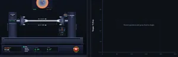
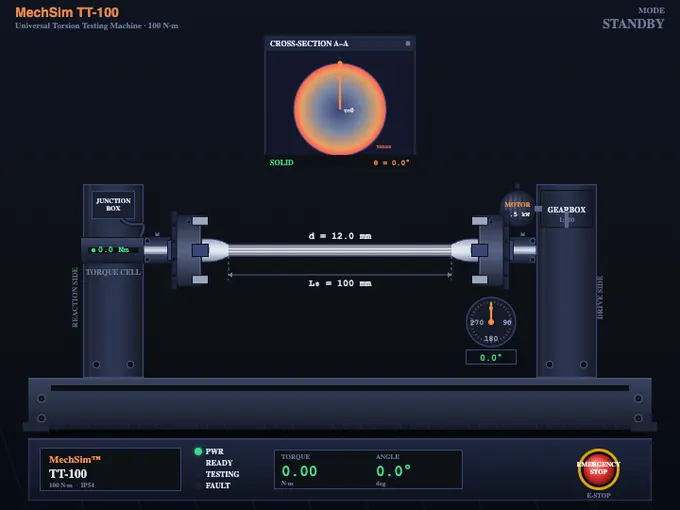
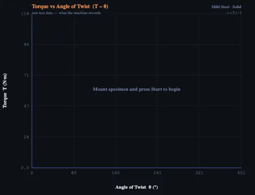
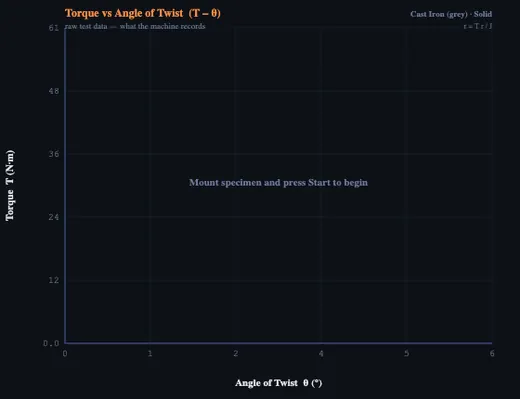

Torsion Test Virtual Lab
Universal Torsion Testing Machine — Solid & Hollow Shaft Twist Test Simulator
3D Model — Torsion Test Virtual Lab
Interactive 3D model of this apparatus. Pick a component on the right, then drag to rotate · scroll to zoom · right-drag to pan.
Σ Live equations — values substituted from current state
📊 Cross-section stress distribution — τ(r) along the radius
💡 Failure mode coach — insights from the current test
1 Overview
The Torsion Testing Machine Virtual Lab is a fully interactive simulator that lets you perform virtual torsion tests on solid and hollow round shafts. In a real laboratory, a torsion testing machine clamps the specimen between a fixed chuck and a rotating chuck, twisting it at a controlled angular speed while a torque cell records the moment required at each angle. This simulator reproduces that workflow, generating real-time torque-angle curves and calculating modulus of rigidity, shear yield strength, ultimate shear strength, modulus of rupture, and the angle at fracture.
The simulator includes thirteen built-in materials eight built-in materials — mild steel, aluminium 6061-T6, cast iron, copper, brass, high-carbon steel, stainless steel 304, and titanium Ti-6Al-4Vmdash; mild steel, aluminium 6061-T6, cast iron, copper, brass, high-carbon steel, stainless 304, Ti-6Al-4V, nickel, magnesium AZ31B, phosphor bronze, Inconel 718, and tool steel D2 — plus a "+ Custom" material builder with validated input. You can switch between solid and hollow shaft geometry, adjust outer diameter, inner diameter (hollow only), gauge length, and twist rate. A built-in SI / Imperial unit toggle switches all values between metric (N·m, MPa, mm) and US customary units (lbf·ft, psi, in). After the test, export results as CSV, PNG, or a full industrial-style PDF report.
2 Setting Up the Load Case

When you first load the simulator you are in Simulate mode. The torsion machine canvas is on the left and the torque-twist graph is on the right. Below the graph you will find the action bar (Mount, Start, Reset, Solid/Hollow toggle, exports) and the controls panel (material, diameter, gauge length, twist rate).
To begin: (1) Select a material. (2) Choose Solid or Hollow geometry. (3) Adjust outer diameter, inner diameter (hollow only), and gauge length. (4) Set the twist rate. (5) Click Mount to clamp the specimen into the chucks. (6) Click Start to apply torque. The machine animation, digital readout, and torque-twist curve update live. When the specimen fractures, a snapping sound plays and the eight result cards reveal the measured properties.
Unit Toggle: Click SI or Imperial in the top bar — readouts, graph axes, badges, stepper labels, the report, and the custom material form all switch instantly.
Right-click menu: Right-click the graph canvas to copy the value at the cursor, save PNG, export CSV, toggle the grid, or reset.
3 Building the Diagrams
The machine canvas shows a horizontal torsion testing machine: a motorised gearbox on the right turns the rotating chuck while the fixed chuck on the left holds a torque cell. The specimen is the round bar between them, with a twist indicator scale showing the angle of rotation. A cross-section A–A view in the top-right corner of the canvas shows the radial shear-stress gradient (zero at centre, maximum at outer fibre, labelled τ=0 and τmax) and a rotating reference line that tracks the live twist of the rear face against the fixed front face. As the test progresses, the specimen visibly twists, and on fracture the failure surface appears — either a transverse (90°) plane for ductile materials such as mild steel, or a helical (45°) plane for brittle materials such as cast iron. Right-click the machine canvas to toggle the dimension lines (L₀, d, dᵢ) on or off.
The graph canvas plots torque (N·m) versus angle of twist (degrees). Yield, ultimate, and fracture points are marked. After the test, eight result cards appear: modulus of rigidity, yield shear stress, ultimate shear stress, modulus of rupture, yield torque, max torque, angle at fracture, and polar moment of inertia J.
4 Reading the Theory
Explore mode is an illustrated reference covering four categories: Machine Parts (fixed chuck, rotating chuck, torque cell, gearbox, twist indicator), Formulas (polar moment of inertia, shear stress, angle of twist, modulus of rigidity), Standards (ASTM E143, ISO 7800), and Failure Modes (ductile transverse, brittle 45° helical, hollow shaft buckling). Each card includes a description, a key formula where applicable, and a worked numerical example.
5 Try a Problem
Practice mode generates random torsion calculations: shear stress from torque and diameter, polar moment of inertia for solid or hollow shafts, modulus of rigidity from torque and twist, angle of twist from material and geometry. Type the answer, click Check, and use Show Solution for a step-by-step walkthrough.
Quiz mode delivers five mixed multiple-choice and numerical questions per session, scored with a star rating. Use it to gauge readiness before an exam.
6 Design Notes
- Start with mild steel as a solid shaft to see a clear elastic-plastic torque-angle curve with yield, plastic, and fracture regions.
- Compare ductile mild steel against brittle cast iron — note the dramatic difference in fracture surface (flat vs 45° helical).
- Switch to hollow geometry — for the same outer diameter, hollow shafts have a smaller J, so they need less torque to twist but reach the same surface shear stress at the outer fiber. This is why drive shafts are hollow: best stiffness-to-weight ratio.
- Use the diameter stepper to see how shear stress scales as 1/d³ — doubling the diameter cuts surface shear stress by 8× at the same torque.
- Increase the gauge length and observe how the angle of twist grows linearly with L for the same torque.
- Use Imperial mode to study US-standard ASTM E143 reporting (lbf·ft and psi).
- Click Export Report to generate a print-ready industrial torsion test certificate with specimen data, machine settings, results, the torque-twist curve, and signature lines.
- Right-click the graph to copy the torque/angle value at any cursor position, toggle the grid, or jump to other exports.
- Use the T – θ / τ – γ toggle above the graph to switch between the engineering view (Torque vs Angle) and the material-science view (Shear Stress vs Shear Strain). The τ-γ curve normalises away the geometry so two specimens of different size can be compared.
- After a test, click Reset to keep the previous curve as a faint ghost overlay behind your next run — perfect for A/B comparing two materials or solid vs hollow. Click Clear Ghost to remove it.
- Open the Learning panels below the graph: live equations (rendered as classical math with KaTeX), the cross-section stress distribution chart showing τ(r) across the radius, and the failure mode coach that explains why this material fractured the way it did.
- Click Show Calculation in the Test Control panel to open a step-by-step modal that derives J, G, τy, τu, the modulus of rupture, and the angle at fracture from the raw test data. Equations are rendered in proper math notation.
- The on-canvas cross-section A–A panel shades the radial shear-stress gradient (τ=0 at the centre, τmax at the outer fibre) so you can see why hollow tubes work so well.
Torsion Testing Machine — Virtual Laboratory

A torsion testing machine twists a round specimen with a controlled moment and records the angle of twist, producing a torque-angle curve from which engineers extract the modulus of rigidity (G), shear yield strength, ultimate shear strength, and modulus of rupture.
This virtual lab reproduces a real Universal Torsion Testing Machine, letting students test thirteen materials in solid or hollow geometry without physical equipment.
How does a torsion testing machine work?
A torsion testing machine consists of a rigid base supporting two chucks. The fixed chuck is connected to a torque cell (or pendulum-style torque arm in older machines) which measures the reaction moment. The rotating chuck is driven by a motor and gearbox at a controlled angular speed. A precision twist indicator (mechanical dial or digital encoder) measures the angle of twist between the two chucks. As the rotating chuck turns, the specimen develops an internal torque equal and opposite to the applied moment, twisting elastically at first, then plastically, and finally fracturing.
Why are drive shafts hollow? Solid vs hollow shaft torsion
The polar moment of inertia determines how much a shaft resists twist. For a solid round shaft, J = πd⁴/32. For a hollow shaft, J = π(d₀⁴ − dᵢ⁴)/32. Hollow shafts achieve nearly the same torsional stiffness as solid shafts at a fraction of the weight, because the outer fibres carry most of the shear stress — the material near the centre contributes very little. This is why automotive drive shafts, helicopter rotor masts, and bicycle bottom brackets are routinely hollow.
There is one demonstration that wins this whole lesson: twist a stick of chalk slowly until it breaks. The fracture is always at 45°, every single time. Chalk is brittle; the maximum tensile stress in a twisted bar is on the helical plane. Mild steel does the opposite — it breaks square across the bar, on the plane of maximum shear. Same loading, different failure plane, because the controlling stress depends on what the material is weakest against. Students who see the chalk break stop confusing this for good.

What is the difference between ductile and brittle torsion failure?
The fracture surface reveals the failure mechanism. In a ductile material such as mild steel, the maximum shear stress acts on a plane perpendicular to the shaft axis, so failure occurs along a flat transverse cross-section. In a brittle material such as grey cast iron or hardened tool steel, the maximum normal (tensile) stress acts on a plane at 45° to the axis, producing a characteristic helical fracture — the same reason chalk twisted in your fingers breaks on a diagonal.

What properties does a torsion test measure?
From the torque-twist curve, the simulator extracts: modulus of rigidity G (slope of the elastic region, related to Young's modulus by E = 2G(1+ν)); shear yield strength τy (approximately 0.5 to 0.577 of the tensile yield strength); ultimate shear strength τu; modulus of rupture (the apparent shear stress at fracture, assuming elastic behaviour); yield and maximum torque; and the angle of twist at fracture, an important ductility indicator.
Who Uses This Simulator?
This torsion testing virtual lab is designed for mechanical, manufacturing, civil, and aerospace engineering students; materials science learners; vocational education trainees; and instructors teaching strength of materials, machine design, or mechanical testing courses. It complements the physical torsion lab and is ideal for distance learning, exam revision, and homework verification.
Typical Material Shear Properties
| Material | Modulus of Rigidity G (GPa) | Shear Yield τy (MPa) | Ultimate Shear τu (MPa) | Failure Mode |
|---|---|---|---|---|
| Mild Steel (AISI 1018) | 80 | 145 | 330 | Ductile (transverse) |
| Stainless Steel (304) | 77 | 125 | 515 | Ductile |
| Aluminium 6061-T6 | 26 | 160 | 205 | Ductile |
| Copper (annealed) | 44 | 40 | 200 | Ductile |
| Cast Iron (grey) | 40 | — | 170 | Brittle (45° helical) |
| Brass (C26000) | 39 | 75 | 235 | Ductile |
| High-Carbon Steel (1080) | 80 | 400 | 750 | Semi-brittle |
| Titanium Ti-6Al-4V | 44 | 550 | 760 | Ductile |
| Nickel (annealed) | 76 | 65 | 290 | Ductile |
| Magnesium AZ31B | 17 | 90 | 150 | Ductile |
| Phosphor Bronze | 41 | 200 | 380 | Ductile |
| Inconel 718 | 77 | 620 | 830 | Ductile (high-temp) |
| Tool Steel D2 (hardened) | 78 | — | 1100 | Brittle (45° helical) |
Torsion Testing Formulas
| Property | Formula | Description |
|---|---|---|
| Polar Moment of Inertia (solid) | J = πd⁴/32 | Geometric stiffness of a round cross-section |
| Polar Moment of Inertia (hollow) | J = π(d₀⁴ − dᵢ⁴)/32 | For thin-wall and thick-wall hollow shafts |
| Shear Stress at Outer Fibre | τ = T r / J | r is the outer radius, T is the applied torque |
| Shear Strain | γ = r θ / L | θ is the angle of twist, L is gauge length |
| Modulus of Rigidity | G = τ/γ = TL/(Jθ) | Slope of the elastic torque-twist line |
| Angle of Twist | θ = TL/(GJ) | Used to predict twist for a given torque |
Explore Related Simulators
If you found this torsion testing simulator helpful, explore our UTM Virtual Lab, Shaft Torsion Calculator, Stress–Strain Curve simulator, and Hardness Testing simulator for more hands-on practice with mechanical testing.